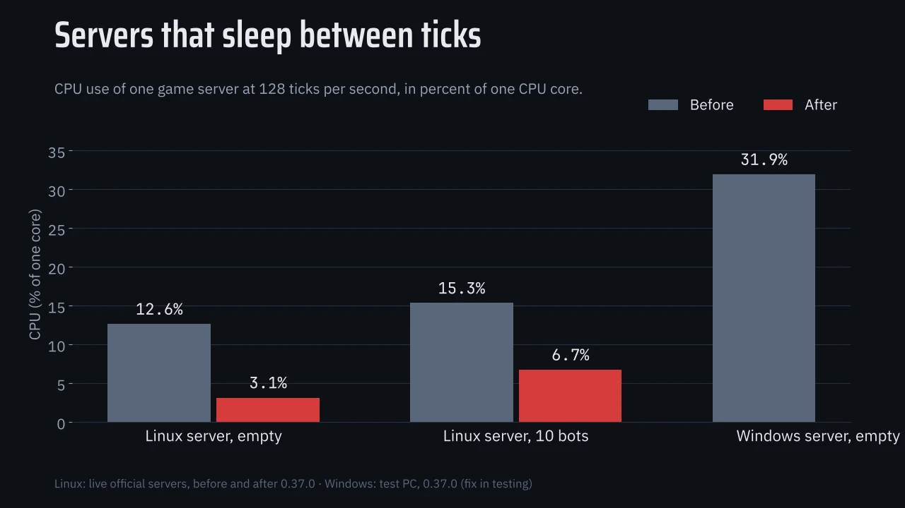

Elke milliseconde gemeten
We hebben het hele spel doorgemeten, van frametijden en laadschermen tot de servers en de download, voordat we besloten wat we zouden aanpakken. Dit vonden we, dit is al opgelost en dit komt nog.
TrueCombat: Platinum draait op een engine die voor het eerst uitkwam in 2003 en die we stuk voor stuk hebben herbouwd: een nieuwe DirectX 12-renderer, nieuwe audio, nieuwe menu's en een nieuwe launcher. Elk van die onderdelen is los getest. Deze week hebben we een stap terug gezet en het hele spel in één keer gemeten, met één vraag: waar verspilt het nog je tijd, je processor of je bandbreedte?
De regel was eenvoudig. Eerst meten, dan pas veranderen. Niets in dit bericht is een gok. Elk getal komt uit een testrun, en elke oplossing is daarna opnieuw gemeten.
Framerate: niet het probleem
We begonnen met de vraag die spelers als eerste stellen. Hoe draait het?
We draaiden de 0.37.0-build op 1080p en 1440p, met DirectX 12 en OpenGL, op Snow en Railhouse, met 16 bots die op de server vochten en een camera die de hele tijd bewoog. Elke run duurde een volle minuut.

Elke run hield gemiddeld de limiet van 500 fps van de engine vast, en de traagste 1% van de frames zakte nooit onder 399 fps. Over alle vijf de runs duurde geen enkel frame langer dan 33 milliseconden, het punt waarop je een hapering begint te voelen. Het traagste frame dat we zagen duurde 6,7 ms.
De engine begrenst de framerate op 500 fps, dus hoger konden deze runs niet gaan. Ze laten zien dat het spel die limiet ruim vasthoudt, ook op 1440p met een volle server.
Deze cijfers komen van een snelle pc met een RTX 4080 SUPER, dus je eigen resultaten zullen anders zijn. Wat ze wel laten zien, is dat het spel zelf niet meer hapert. Eerder dit jaar werden wapenmodellen en geluiden pas geladen als je ze voor het eerst zag, wat midden in een match haperingen tot 1,9 seconde gaf. Dat is opgelost in 0.32.0, en deze runs bevestigen dat het opgelost blijft.
Laden: onder de twee seconden
Een map laadt nu in ongeveer 1,7 seconde, gemeten vanaf het verbinden tot je eerste frame in het spel. Een koude start op een nieuw profiel was even snel als een warme: 1,73 seconde tegenover 1,75 seconde. De materiaalcache uit 0.36.0 en de eerdere laadverbeteringen doen hun werk.
De launcher opent zijn venster ongeveer 0,1 seconde nadat je hem start.
Je processor, je batterij
Framerate is niet het enige dat telt. Op een laptop, of met Discord en een browser naast het spel, betekent processortijd ook warmte, ventilatorgeluid en batterijduur. Daarom hebben we gemeten hoeveel processorkracht het spel gebruikt bij verschillende framelimieten.

Het processorgebruik stijgt gelijk op met de framerate, met ongeveer 0,14% van één kern per frame per seconde. Dat is goed nieuws. Het betekent dat het spel geen tijd verspilt met wachten tussen frames, dus een lagere limiet bespaart echt stroom. Speel je op een 144 Hz-scherm, dan gebruikt een limiet van 144 fps minder dan een derde van de processorkracht van 500 fps.
Servers die zuiniger wachten
Onze servers draaien op 128 ticks per seconde, wat 7,8 milliseconden tussen twee ticks geeft. In die tijd hoort een server te slapen. We ontdekten dat elke server de laatste milliseconde voor elke tick bezig bleef met wachten: steeds opnieuw de klok controleren in plaats van slapen. Dat kost ongeveer een achtste van een processorkern per server, ook als er niemand speelt.
Op Linux, waar de officiële servers draaien, lost 0.37.0 dit al op. Een server slaapt nu tot een kwart milliseconde voor zijn volgende tick. Op onze live servers daalde het processorgebruik van een lege server daardoor van 12,6% naar 3,1% van een kern, en van een server met 10 bots van 15,3% naar 6,7%. De ticks komen even precies als voorheen.

Windows heeft dezelfde gewoonte. Windows kan alleen wachten in stappen van hele milliseconden, dus een Windows-server kan tot twee milliseconden van elke tick actief wachten. Dat merk je als je zelf een server op je pc host. Een oplossing voor Windows wordt getest. Ze gebruikt een nauwkeurige timer van Windows 10 en 11, zodat de server kan slapen. In onze eerste tests daalde het processorgebruik van een lege server ongeveer tienvoudig, maar de ticks waren nog niet zo stipt als we willen, dus we stellen ze bij voordat de oplossing verschijnt.
Niets hiervan verandert hoe het spel speelt. Ticks komen even precies als voorheen. De servers stoppen gewoon met werken als er niets te doen is.
Een kleinere download
Elke release bevatte vroeger een volledige zip van het spel als reservedownload. Die zip kwam dicht bij de limiet van 2,08 GB voor een bestand bij een release, en 0.37.0 zou erover zijn gegaan.

De launcher en het installatieprogramma downloaden al losse bestanden, dus de zip was er alleen nog voor oudere launchers. Vanaf 0.37.0 kan de launcher updaten zonder die zip, en de zip is gekrompen van 2,04 GB naar 0,82 GB omdat de HD-texturepakketten er niet meer in zitten. Die reservezip verdwijnt in een latere release helemaal. De HD-pakketten komen nog steeds bij elke installatie, net als voorheen.
Sneller bouwen, sneller oplossen
We hebben ook gemeten hoe we het spel bouwen en testen. Een volledige testronde voor een release duurt ongeveer 45 minuten als alles slaagt, maar één wisselvallige test kon de hele ronde opnieuw laten starten en de testmachine urenlang bezet houden. De build zelf gebruikte maar 6 van de 28 processorthreads van de testmachine.
Builds gebruiken nu alle threads, en bij het verpakken van een release worden bestanden onderweg gecontroleerd in plaats van eerst meer dan een gigabyte in het geheugen te laden. Zo bereiken oplossingen je sneller.
Negen geluiden die nooit klonken
Toen we de logs van deze runs doornamen, vonden we negen geluiden die het spel bij elke start opvroeg maar niet kon vinden. Ze worden genoemd in de gegevens van het originele TrueCombat: Elite, maar de bestanden zijn nooit meegeleverd, ook niet in het originele spel. Elk van die geluiden speelde als stilte af.
Sommige had je gemerkt als je wist dat ze ontbraken:
- de zwaai van het mes
- de verre echo van de MAC-10 en de MAC-10 met demper
- het zoemen van de lampen op Snow, Northport en Stadtrand
- het geluid van landen op een hek
- de geluiden van sommige breekbare objecten
Een komende update koppelt elk ervan aan het best passende geluid dat het spel al heeft: de eigen snijgeluiden van het mes, het bestaande verre schot van de MAC-10, het bestaande lampgezoem en het landingsgeluid op metaal. Twee van de negen zijn geluiden voor het aanwijzen van menuknoppen, waar de menu's nooit voor ontworpen zijn. Die blijven bewust stil. Ze geven alleen geen foutmelding meer.
Wat volgt
De oplossing voor Windows-servers en de ontbrekende geluiden worden getest voor een komende update. We blijven deze metingen voor elke grote release herhalen, zodat een vertraging in onze cijfers opduikt voordat ze in jouw spel opduikt.
Zie je haperingen, lange laadschermen of een hoog processorgebruik op je eigen pc, laat het ons weten op Discord. Een melding met je grafische kaart en instellingen is de snelste manier om het te vinden.
Was dit artikel de moeite waard?
Anoniem. Geen account, geen cookies.
Vragen over dit artikel? Stel ze aan het team op Discord.